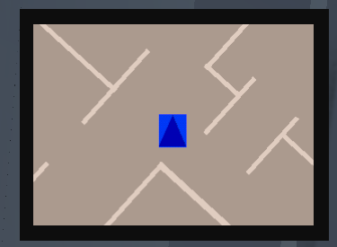
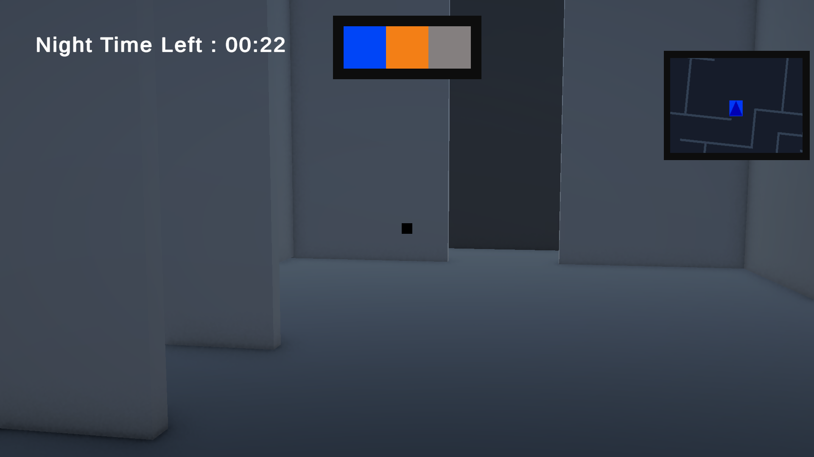
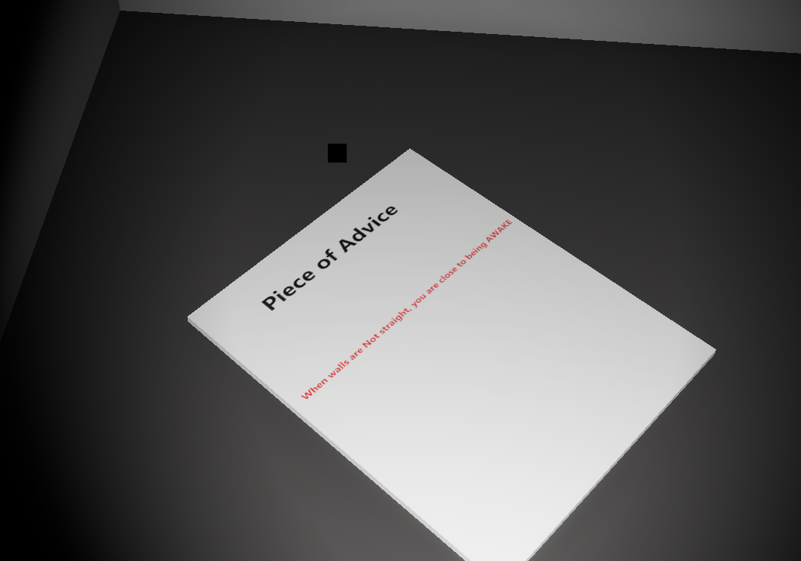
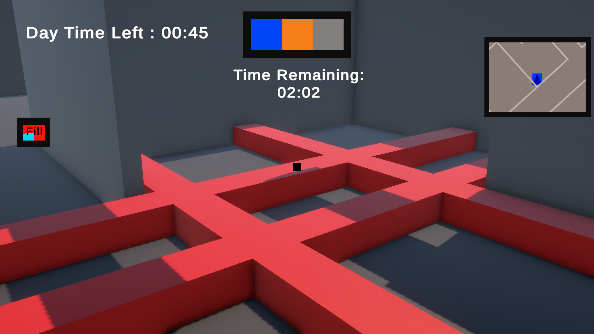

Wake Up
Project Information
Live-Demo: Currently Not Available
Role: Frontend and Backend developer
Timeline: 12 March 2026 - 1 June 2026
Project Overview
The aim of this project was to explore a made up hypothesis about how a game machanic or system of our choice affects the player's gameplay expirience. This mechanic or system could be taken from any existing game, for example this prototype got inspiration from a maze runner movie. But for some features of the game, like how the game world (maze) is dark with not enough lights and how players depend on their flash light for vision, these ideas were taken from a horror game called Little Nightmares. And other ideas like limiting the time players have to find the exit of the maze was suggested by playtesters. The goals for this prototype includes:
- Have sytems that help players navigate;
- Have good communication systems;
- Have game features that communicates to the player the theme of the game;
- Implemet challenges or feature that improve gameplay expirience;
Technologies used:
- Unity Hub;
- C-sharp;
- Krita;
- Visual Studio Code Editer;
Implementation Process
When the prototype was implemented, the important parts of the prototype were the first ones to be implemented (the maze). This was to make sure that the following systems had somewhere to be tested and to make sure the small features that need to be connected to big systems have system to connect to.
1. Maze
When the maze was designed, at first it was just going to be a maze made of paths some paths leading the players close to the exit, while others took players away from the exit leading them to dead ends. But when the maze was being built there were some issues with the design.

Challenges:
Spacing
When the maze was being built, I had an issue setting the right sizes for paths so that players don't get frustrated from the walls being too close to each other, or players not getting challenged or not feeling the effects of a maze due to the walls being too far apart. So I had to do a lot of playtesting and adjusting, ensuring that the width of the paths of the maze fits the maze well.
Maze structure
Another problem I came across while I was building the maze was the fact that when the maze was made up of paths only, players got frustrated quickly because of how challenging it was to track where they have been or not been. To fix this, instead of the maze having paths only, I included rooms around so that it's easy to track where they have been. This also gives players a chance to get breathing room after walking between walls around the maze. Adding the rooms made the maze feel fair to players compared to just having paths throughout the maze. This allows the maze to challenge the players memory, and make the prototype fun instaed of just being challenging.
Path design
When the maze was being built, I had to first make sure that there is a path or paths that leads the player to the exit of the maze before starting to work on the tricky paths (dead ends). And even when the paths that leads the players to the exit where designed, I had to also make them work with the tricky paths so that the maize does not have a lot of dead ends which might frustrate players. The tricky paths are not just meant to lead players to dead ends, the can also lead players to where the good paths starts, but can make players feel like they are moving in circles.
2. Navigation System
These systems are used to help players get around the map without the getting frustrayed. At first, the game had a mini map that helped players get around the map by showing the where walls have openings that lead the to different parts of the map. But this mini map was used when the prototype had a bright scene. But now since the prototype is turned to a fully horror game, the scene was made to stay dark the whole time to make the prototype actually feel like a horror game. This made the mini map to also be dark and became useless for the player. And made the game fit in well with horror games since most of them dont have mini maps, instead they have physical map that players can pick up and look at.

3. Communication Systems
These systems communicate game states to players, helping them understand what is required from them. For this prototype, multiple communication systems were implemented to communicate different things to the player. These include:
- Cold-Medium-Hot System;
- Papers;
- Sound;
- Count downs;
- Health System;
Explanations:
BOR System
This system is used to communicate to players how far they are from the exit. The system uses phases to communicate this to the player, these phases are called;
- Out of range;
- Cold;
- Medium;
- Hot;


This system changes phases to indicate if the player is close or far from the exit (Out-of-range being the furthest and Hot being the closest). Each phase has a color representing it. When the system is in the Out-of-range phase, the system does not display anything. But when the player moves closer to the exit, the system changes from Out-of-range to Cold phase which is represented by a Blue color. If the player keeps moving towards the direction of the exit, the system will then change from a Cold phase to a Medium phase, which is represented by an orange color. And if the player keeps getting closer to the exit, the system then changes to the Hot phase represented by a red color. And when system changes from one phase to another, the system flashes the screen with the color of the current phase (phase changed to), and the name of that phase.
Papers
This prototype uses papers that players have to pick up or just get close to, to read clues that help them get to the exit faster. These clues dont tell players exactly how to get to the exit, but tells them how they would know when they are close. The papers are used as rewards to players after they manage to get to a certain part of the maze.

Sound
Sound is one of the most important communication systems used in the prototype. What makes sound important is the fact that players cant miss it and it can make players feel exactly how the game wants them to feel. In the Cold-Medium-Hot system, sound is used to increase tension in the prototype as the player gets close to the exit. And sound it's also used to communicate small player-action like when the player is walking, recieving damage, picking up power-ups and when they are getting attacked. Sound is also used in the countdown system and health system. In the countdown system, sound is used to notify players when their time is running out, making them even more nervous. For the Health system, sound is used when the players health is about to deplete. How this works is when the player's health is below a certain number (30 hp), the player will start hearing a heart beat sound effect playing, making the aware of their health.
Countdowns
This prototype had two different types of countdowns, one countdown was used to show the player the amount of time left before it becomes night time if its day time, and shows the time left before it becomes day time when it is night time. One countdown is used to tell the player the amount of time they have to beat the prototype (find the exit). The reason why the second countdown was implemented was becouse before it was implemented players did not have any agency, and they could just walk around the map doing other things and not trying to actually beat the prototype. This made the prototype boring for most players. To fix this, the gameplay limit countdown was implemented to force players to focus on the game and actually try to beat the game.
Health System
This prototype uses a health bar to represent the character's health instead of lives, since lives work better if the game uses check points. There are few features that affect the player's health, these includes obsticles and jump scares. For the obsticles, the player loses health when they are in contact with them. And for the jump scares, the player will lose health when they trigger the jump scares and they will lose health for a long as the jump scare is visible on the screen.
4. Theme and Genre
To communicate the prototype's theme properly to the player, alot of features were used to try to make sure players get an idea of what the theme of the prototype is, these include audio and lighting. For sound, the prototype was made to play creepy sound effects when the character passes specific areas of the maze to trigger the players emotions. And even when the player gets attacked, there is sound that plays so that there is feedback in the prototype, making the attack impectful. And when it comes to lighting, the prototype's world was made to always be dark which is how most horror games are. Since the prototype world is dark, to allow players to see where they are going, a torch was implemeted.
5. Implemenation of challenges
Since the prototype's goal is to escape a maze, the prototype already has a challenge for the player. But to avoid players getting bored while trying to find the exit, I implemeted in-maze challenges that keeps players interested throughout gameplay. But to also avoid making the prototype too challenging for the player, only a few in-maze challenges were implemeted. One of these challenges include obsticles, to get past these onsticles the player needs to make use of mechanics like jumping and crouching. The obsticles reduce the player's health if the player gets in contact with them. And another challenge that was implemented was making the maze have jump scares that make player be more careful with were they go. To make sure the prototype feels fair to players, these jump scares were placed in some rooms and paths and had warnings that tell players if there is a jump scare ahead of them or not.
